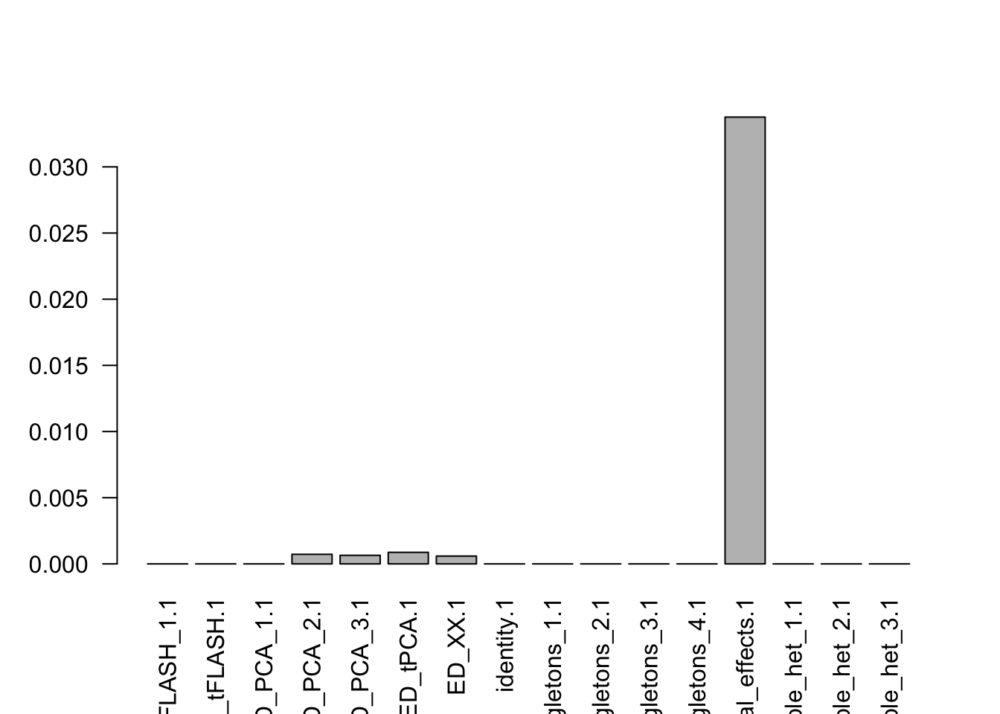
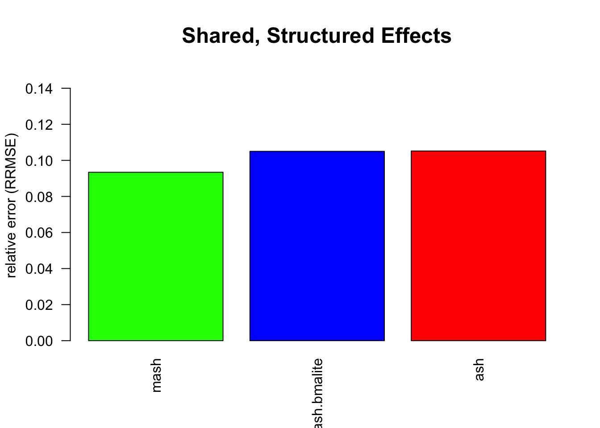

simualtions
Last updated: 2019-10-11
Checks: 5 2
Knit directory: lipids_mvp/
This reproducible R Markdown analysis was created with workflowr (version 1.4.0). The Checks tab describes the reproducibility checks that were applied when the results were created. The Past versions tab lists the development history.
The R Markdown is untracked by Git. To know which version of the R Markdown file created these results, you’ll want to first commit it to the Git repo. If you’re still working on the analysis, you can ignore this warning. When you’re finished, you can run wflow_publish to commit the R Markdown file and build the HTML.
Great job! The global environment was empty. Objects defined in the global environment can affect the analysis in your R Markdown file in unknown ways. For reproduciblity it’s best to always run the code in an empty environment.
The command set.seed(20190925) was run prior to running the code in the R Markdown file. Setting a seed ensures that any results that rely on randomness, e.g. subsampling or permutations, are reproducible.
Great job! Recording the operating system, R version, and package versions is critical for reproducibility.
Nice! There were no cached chunks for this analysis, so you can be confident that you successfully produced the results during this run.
Using absolute paths to the files within your workflowr project makes it difficult for you and others to run your code on a different machine. Change the absolute path(s) below to the suggested relative path(s) to make your code more reproducible.
| absolute | relative |
|---|---|
| ~/lipids_mvp/analysis/ | analysis |
| ~/lipids_mvp/data/EDcov_sim.Rds | data/EDcov_sim.Rds |
| ~/lipids_mvp/data/mashresult_sim.rds | data/mashresult_sim.rds |
| ~/lipids_mvp/data/ash_sim.rds | data/ash_sim.rds |
Great! You are using Git for version control. Tracking code development and connecting the code version to the results is critical for reproducibility. The version displayed above was the version of the Git repository at the time these results were generated.
Note that you need to be careful to ensure that all relevant files for the analysis have been committed to Git prior to generating the results (you can use wflow_publish or wflow_git_commit). workflowr only checks the R Markdown file, but you know if there are other scripts or data files that it depends on. Below is the status of the Git repository when the results were generated:
Ignored files:
Ignored: .DS_Store
Ignored: .Rhistory
Ignored: analysis/.DS_Store
Ignored: analysis/.RData
Ignored: analysis/.Rhistory
Ignored: analysis/looking_at_significance_cache/
Ignored: analysis/workingwithdata_cache/
Ignored: data/.DS_Store
Ignored: data/Archive.zip.gz
Ignored: data/EDcov.Rds
Ignored: data/EDcov_sim.Rds
Ignored: data/ash.rds
Ignored: data/ash_sim.rds
Ignored: data/gtexcolors.txt
Ignored: data/hdl_max.txt
Ignored: data/ldl_max.txt
Ignored: data/mashcomplete.rds
Ignored: data/mashcomplete.rds.zip
Ignored: data/mashresult_sim.rds
Ignored: data/max_ld_block.txt
Ignored: data/merged_betas.txt
Ignored: data/merged_p.txt
Ignored: data/merged_se.txt
Ignored: data/merged_z.txt
Ignored: data/tc_max.txt
Ignored: data/tg_max.txt
Ignored: data/znew.txt
Ignored: docs/.DS_Store
Untracked files:
Untracked: analysis/simulations.Rmd
Untracked: docs/figure/simulations.Rmd/
Unstaged changes:
Modified: analysis/simualtions.Rmd
Note that any generated files, e.g. HTML, png, CSS, etc., are not included in this status report because it is ok for generated content to have uncommitted changes.
There are no past versions. Publish this analysis with wflow_publish() to start tracking its development.
Introduction
Our goal is to simulate GWAS in a situation with 1) weak signal (only 1% if associations are real) 2) strongly correlated errors (i.e, cor(e_i,e_j)=0.8).
We simulate the data, and then compute posteriors using univariate methods and configuration based joint methods. Then we compute RMSE (measure of accuracy) and produce the ROC curves demonstrating power.
setwd("~/lipids_mvp/analysis/")
source("../scripts/Sim_with_error.R")
m.model=readRDS("../data/mashcomplete.rds")
covmat=m.model$fitted_g$Ulist[1:7]
set.seed(123)
sim.data=sim.with.error(J=10000,d=4,rho=0.8,n=100,covmat = covmat,betasd = 0.0001,esd = 0.005) ##sample 100 from the K covariance matrices with equal probability
bmat=sim.data$betahat
semat=sim.data$sebetahat
beta=sim.data$beta
zmat=bmat/sematHere we demonstrate the correlated error matrix:
zmash=zmat
library("mashr")Loading required package: ashrlibrary("flashr")
source('~/Dropbox/jointData/flashscript.R')
# identify a random subset of 20000 tests
random.subset = sample(1:nrow(zmash),2000)
data.temp = mash_set_data(zmash[random.subset,],alpha = 1)
Vhat = estimate_null_correlation_simple(data.temp)
library("lattice")
clrs = colorRampPalette((c("#D73027","#FC8D59","#FEE090","#FFFFBF", "#E0F3F8","#91BFDB","#4575B4")))(64)
print(levelplot(Vhat,col.regions = clrs,xlab = "",ylab = "",colorkey = TRUE,main="VHAT"))
rm(data.temp)
data.random = mash_set_data(zmash[random.subset,],alpha = 1,V=Vhat)
maxval=apply(zmash,1,function(x){max(abs(x))})
zmax=zmash[order(maxval,decreasing = T),][1:100,]
data.strong = mash_set_data(zmax,alpha = 1,V=Vhat)
U.pca = cov_pca(data.strong,3)
#U.flash=cov_flash(data.strong, non_canonical = TRUE)
#X.center = apply(data.strong$Bhat, 2, function(x) x - mean(x))
#U.ed = cov_ed(data.strong, c(U.flash, U.pca, list("XX" = t(X.center) %*% X.center / nrow(X.center))))
#saveRDS(U.ed,"~/lipids_mvp/data/EDcov_sim.Rds")
U.ed=readRDS("~/lipids_mvp/data/EDcov_sim.Rds")
U.c = cov_canonical(data.random)
m = mash(data.random, Ulist = c(U.ed,U.c),outputlevel = 1) - Computing 2000 x 225 likelihood matrix.
- Likelihood calculations took 0.06 seconds.
- Fitting model with 225 mixture components.
- Model fitting took 1.88 seconds.mash.data=mash_set_data(zmash,V = Vhat,alpha = 1)
m$result=mash_compute_posterior_matrices(m, mash.data, algorithm.version = "Rcpp")
saveRDS(m,"~/lipids_mvp/data/mashresult_sim.rds")k=length(m$fitted_g$Ulist)
l=length(m$fitted_g$grid)
pimat=matrix(m$fitted_g$pi[-1],nrow=l,byrow=T)
colnames(pimat)=names(m$fitted_g$pi)[2:(k+1)]
barplot(colSums(pimat),las=2)
# library("lattice")
# for(i in 1:k){
# z.num=as.matrix(cov2cor(m$fitted_g$Ulist[[i]]))
# colnames(z.num)=row.names(z.num)=colnames(zmash)
# clrs = colorRampPalette((c("#D73027","#FC8D59","#FEE090","#FFFFBF", "#E0F3F8","#91BFDB","#4575B4")))(64)
# z.num[lower.tri(z.num)] = NA
# print(levelplot(z.num,col.regions = clrs,xlab = "",ylab = "",colorkey = TRUE,main=paste0(names(m$fitted_g$Ulist)[[i]])))
# }
library("ashr")
ash.z=apply(zmash,2,function(x){ashr::ash(x,sebetahat = rep(1,length(x)))})
saveRDS(ash.z,"~/lipids_mvp/data/ash_sim.rds")
univariate.ash.pm=cbind(ash.z[[1]]$result$PosteriorMean,ash.z[[2]]$result$PosteriorMean,ash.z[[3]]$result$PosteriorMean,ash.z[[4]]$result$PosteriorMean)
lfsr.ash=cbind(ash.z[[1]]$result$lfsr,ash.z[[2]]$result$lfsr,ash.z[[3]]$result$lfsr,ash.z[[4]]$result$lfsr)If we want to compare to eQTL bma, we use only canonical configurations:
U.c = cov_canonical(mash.data)
print(names(U.c))[1] "identity" "singletons_1" "singletons_2" "singletons_3"
[5] "singletons_4" "equal_effects" "simple_het_1" "simple_het_2"
[9] "simple_het_3" m.c = mash(mash.data, U.c) - Computing 10000 x 145 likelihood matrix.
- Likelihood calculations took 0.21 seconds.
- Fitting model with 145 mixture components.
- Model fitting took 3.77 seconds.
- Computing posterior matrices.
- Computation allocated took 0.06 seconds.bma.pm=m.c$result$PosteriorMean
lfsr.bma=m.c$result$lfsrNow let’s do some analysis;
sebetahat=semat[1:10000,]
mash.means=m$result$PosteriorMean
lfsr.mash=m$result$lfsr
standard=sqrt(mean((beta[1:10000,]-bmat[1:10000,])^2))
# sqrt(mean((beta[1:10000,]-mash.means[1:10000,]*sebetahat)^2))/standard
# sqrt(mean((beta[1:10000,]-univariate.ash.pm[1:10000,]*sebetahat)^2))/standard
# sqrt(mean((beta[1:10000,]-bma.pm[1:10000,]*sebetahat)^2))/standard
rmse.all.table=cbind(mash=sqrt(mean((beta[1:10000,]-mash.means[1:10000,]*sebetahat)^2))/standard,mash.bmalite=sqrt(mean((beta[1:10000,]-bma.pm[1:10000,]*sebetahat)^2))/standard,ash=sqrt(mean((beta[1:10000,]-univariate.ash.pm[1:10000,]*sebetahat)^2))/standard)
print("RMSE TABLE",rmse.all.table)[1] "RMSE TABLE"barplot(as.numeric(rmse.all.table),main="Shared, Structured Effects",
ylab="relative error (RRMSE)",xlab="",col=c("green","blue","red"),names=colnames(rmse.all.table),ylim=c(0,0.15),cex.main=1.5,cex.lab=1,cex.names=1,las=2)
sign.test.mash=beta*mash.means
sign.test.ash=beta*univariate.ash.pm
sign.test.bma=beta*bma.pm
mash.power=NULL
ash.power=NULL
bma.power=NULL
mash.fp=NULL
ash.fp=NULL
bma.fp=NULL
mash.td=NULL
ash.td=NULL
bma.td=NULL
thresholds=seq(0.01,1,by=0.01)
for(s in 1:length(thresholds)){
thresh=thresholds[s]
##sign power is the proportion of true effects correctly signed at a given threshold
mash.power[s]=sum(sign.test.mash>0&lfsr.mash<=thresh)/sum(beta!=0)
ash.power[s]=sum(sign.test.ash>0&lfsr.ash<=thresh)/sum(beta!=0)
bma.power[s]=sum(sign.test.bma>0&lfsr.bma<=thresh)/sum(beta!=0)
##false positives is the proportion of null effects called at a given threshold
mash.fp[s]=sum(beta==0&lfsr.mash<=thresh)/sum(beta==0)
ash.fp[s]=sum(beta==0&lfsr.ash<=thresh)/sum(beta==0)
bma.fp[s]=sum(beta==0&lfsr.bma<=thresh)/sum(beta==0)
##false sign rate is the proportion of significant effects that are incorrectly signed at a given threshold
}
#frow=c(1,2))
plot(mash.fp,mash.power,cex=0.5,pch=1,col="green",ylab="True Positive Rate",xlab="False Positive Rate",type="l",main="",xlim=c(0,0.4),ylim=c(0,0.6))
#title("True Positive vs False Positive",cex.main=1.5)
lines(ash.fp,ash.power,cex=0.5,pch=1,ylim=c(0,1),col="red")
lines(bma.fp,bma.power,cex=0.5,pch=1,ylim=c(0,1),col="blue")
#lines(eskin.f.fp,eskin.f.power,cex=0.5,pch=1,ylim=c(0,1),col="pink")
#lines(eskin.r.fp,eskin.r.power,cex=0.5,pch=1,ylim=c(0,1),col="purple")
legend("topleft",legend = c("mash","bmalite","ash"),col=c("green","blue","red"),pch=c(1,1,1,1,1))
sessionInfo()R version 3.5.2 (2018-12-20)
Platform: x86_64-apple-darwin15.6.0 (64-bit)
Running under: macOS Mojave 10.14.6
Matrix products: default
BLAS: /Library/Frameworks/R.framework/Versions/3.5/Resources/lib/libRblas.0.dylib
LAPACK: /Library/Frameworks/R.framework/Versions/3.5/Resources/lib/libRlapack.dylib
locale:
[1] en_US.UTF-8/en_US.UTF-8/en_US.UTF-8/C/en_US.UTF-8/en_US.UTF-8
attached base packages:
[1] stats graphics grDevices utils datasets methods base
other attached packages:
[1] lattice_0.20-38 mixsqp_0.1-97 flashr_0.6-3 mashr_0.2.21.0631
[5] ashr_2.2-37 MASS_7.3-51.4 mvtnorm_1.0-11
loaded via a namespace (and not attached):
[1] Rcpp_1.0.1 pillar_1.4.2 compiler_3.5.2
[4] git2r_0.26.1 highr_0.8 plyr_1.8.4
[7] workflowr_1.4.0 iterators_1.0.10 tools_3.5.2
[10] digest_0.6.20 tibble_2.1.3 gtable_0.3.0
[13] evaluate_0.14 pkgconfig_2.0.2 rlang_0.4.0
[16] Matrix_1.2-17 foreach_1.4.4 yaml_2.2.0
[19] parallel_3.5.2 xfun_0.8 dplyr_0.8.3
[22] stringr_1.4.0 knitr_1.23 fs_1.3.1
[25] tidyselect_0.2.5 rprojroot_1.3-2 grid_3.5.2
[28] glue_1.3.1 R6_2.4.0 rmarkdown_1.14
[31] rmeta_3.0 reshape2_1.4.3 purrr_0.3.2
[34] ggplot2_3.2.0 magrittr_1.5 scales_1.0.0
[37] backports_1.1.4 codetools_0.2-16 htmltools_0.3.6
[40] abind_1.4-5 assertthat_0.2.1 softImpute_1.4
[43] colorspace_1.4-1 stringi_1.4.3 lazyeval_0.2.2
[46] munsell_0.5.0 doParallel_1.0.14 pscl_1.5.2
[49] truncnorm_1.0-8 SQUAREM_2017.10-1 crayon_1.3.4